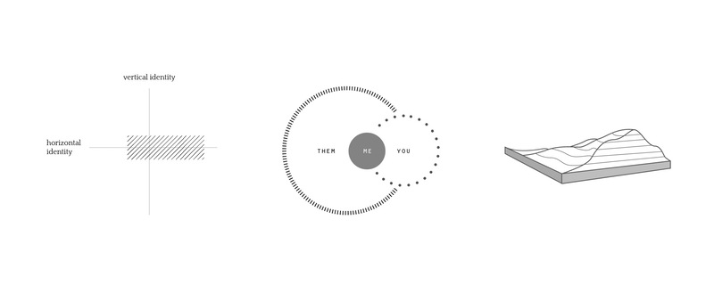

And everyone, somewhere, is someone is my exploration of memory, self, and cultural landscapes. In particular, I am interested in visually communicating non-representational geographies and memory-identity. This book is my personal expression of these explorations — all imageries are personal and my own. Bits and pieces of Owain Jones’ Geography, Memory and Non-Representational Geographies, from Geography Compass have been included. It is a beautifully written article that approaches these concepts in more eloquence than I can ever hope to express in words.
There are ecologies of memory that exist between the public and the private, between larger histories and those of families and individuals, between memory functions, material, texts, images and senses. — Owain Jones
Diaspora and migrant themes are not unique, but common elements enable us to emphasize and see commonality between one another. They allow for connection in unlikely places. Each story is a combination of many elements, granting us both connection and individualism.
From the beginning, this project aims to convey an interlinking of shared experiences through individual stories. It is also a visual experimentation to contrast representational information — such as geography, topography, and maps — with qualitative ones of human narratives, cultural values, emotional truths, and identities.